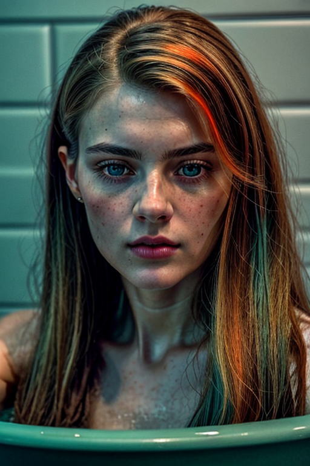
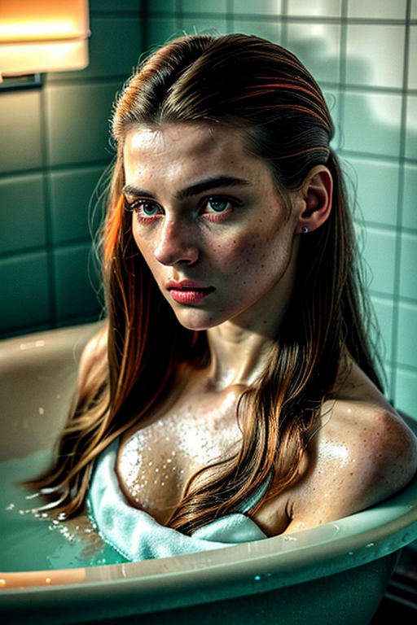
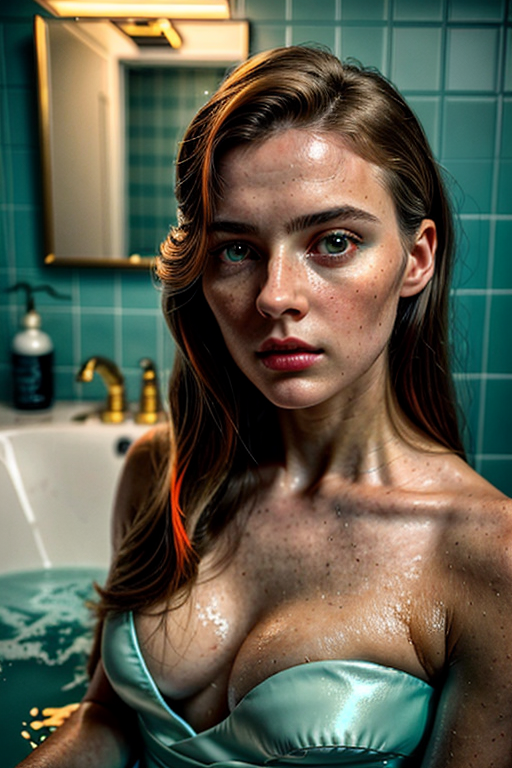
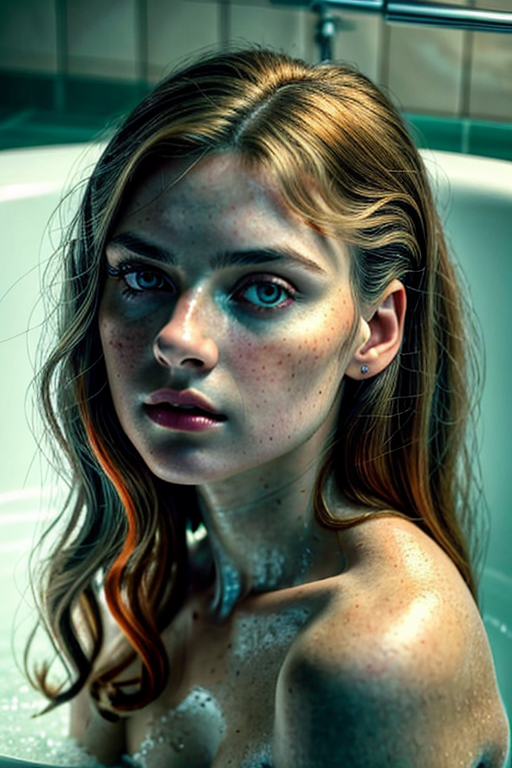
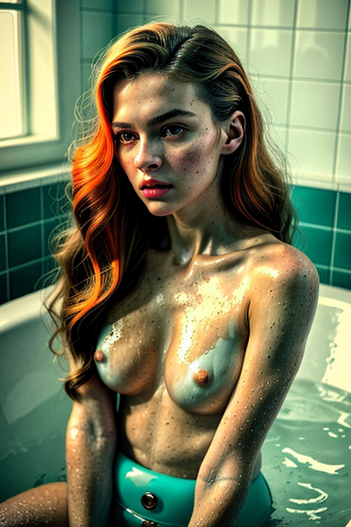
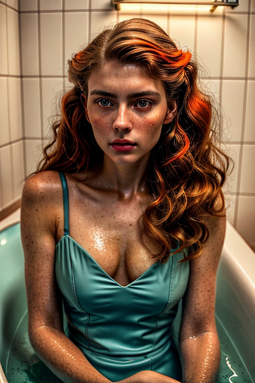
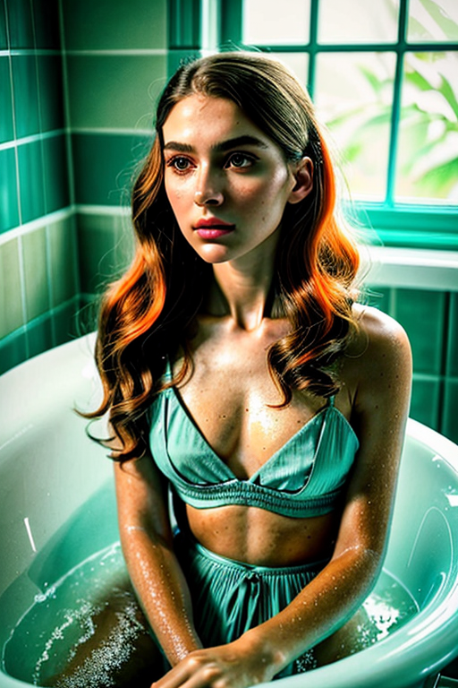
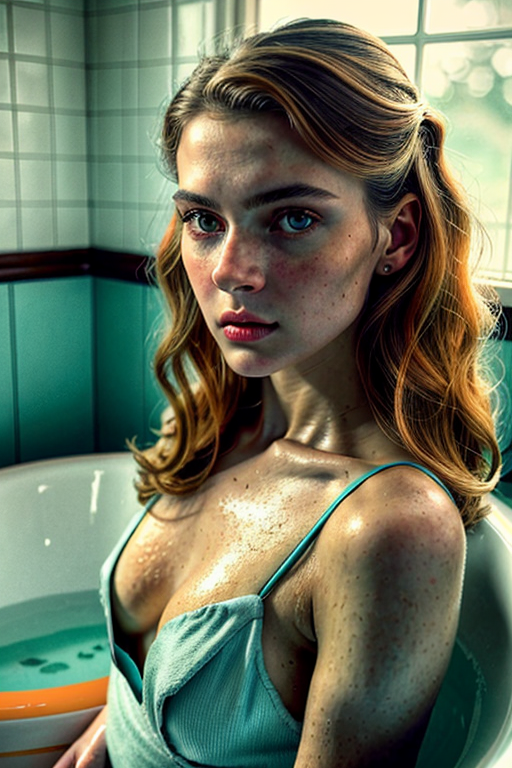
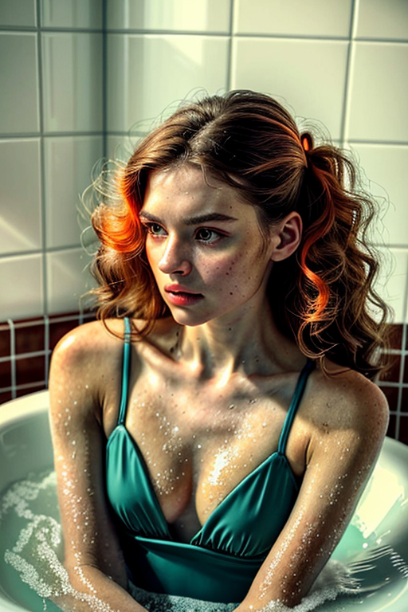
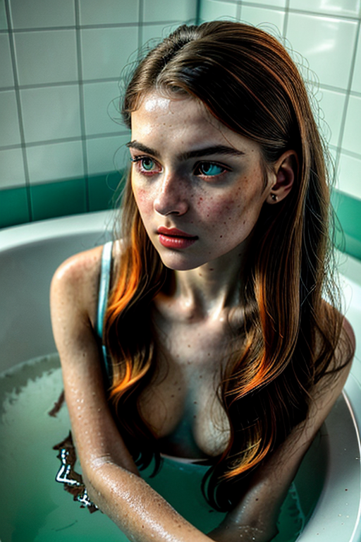

This set explores should i put pictures in my bathroom through vintage aesthetics and moody tone under overcast. Compositions use wide shot with urban backdrop, keeping focus clear and tidy. Details like evening dress styling and balanced colors make browsing easy.
Browse shower images. Page 3 of curated shower-style portrait collection.
     




This page explores page3 with a practical focus on visual detail and browsing experience. Alt text and headings are optimized to make the content accessible and to provide consistent cues across the site. Subtle differences in wording help avoid duplication across similar pages. If you are comparing alternatives, keep an eye on subtle differences in framing, contrast, and color balance. Internal navigation leads to related items with comparable tone or composition. This reduces bounce and supports exploration within the same theme. Alt text and headings are optimized to make the content accessible and to provide consistent cues across the site. Subtle differences in wording help avoid duplication across similar pages. Alt text and headings are optimized to make the content accessible and to provide consistent cues across the site. Subtle differences in wording help avoid duplication across similar pages. Bookmark the page if it’s useful; updates aim to improve clarity, speed, and overall structure over time.